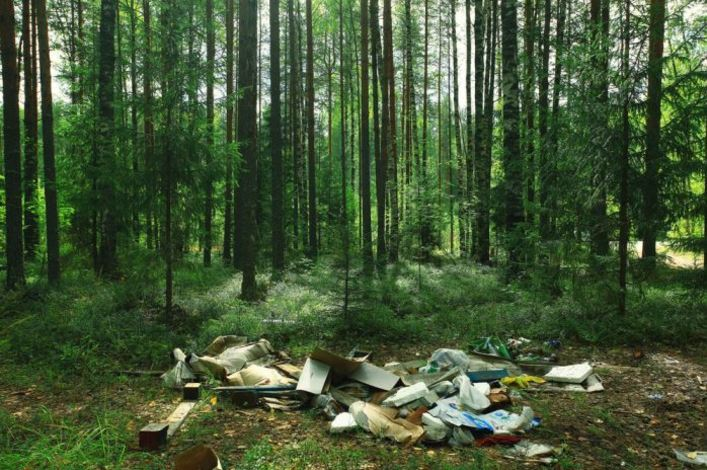

Remnants Of Mysterious Ancient Civilisation Discovered In Local Forest
STAFF WRITER: JOE SOAP, February 24, 2017
ARCHAEOLOGISTS are said to be ‘baffled’ by the discovery of strange artefacts in a Waterford forest, with many suggesting that the items must have belonged to an ancient, but very advanced civilisation.
The items were discovered by ramblers in the picturesque surroundings of Glenshelane Forest park in Co. Waterford, and consist of items which suggest our ancestors may have been ahead of their time in the field of liquid storage containers and food wrapping.
Metal canisters fashioned to hold liquid which the ancient people could drink through a small opening at the top were found, as well as waxed paper parcels that some experts believe may have been used to transport cooked meats and potatoes from their point of origin to a spot more suitable for dining.
“It’s amazing; the items look a lot like cans and fast food containers that we have today,” said one archaeology expert.
“We’ve even discovered a nearby site where these people may have had a fire to warm themselves while they drank and ate. It’s amazing how well the artefacts have been preserved, despite surely being here for thousands of years. It’s almost as if they were just left here last weekend”.
Reports of similar sites have sprung up around the country, leading experts to believe that ancient man was a primitive beast, with no respect for the lands he walked on.
Are you getting the most out of your website?
I can help you get there.